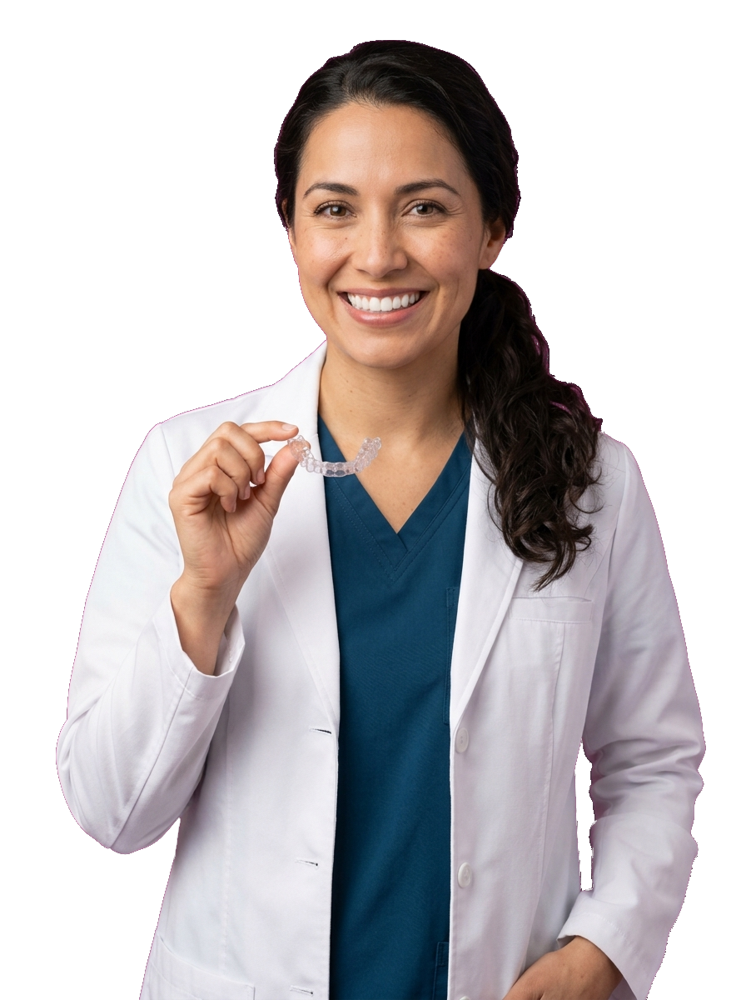
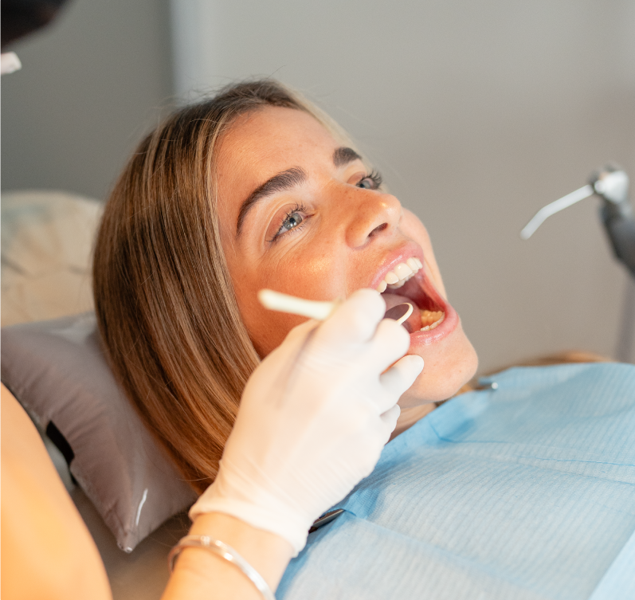
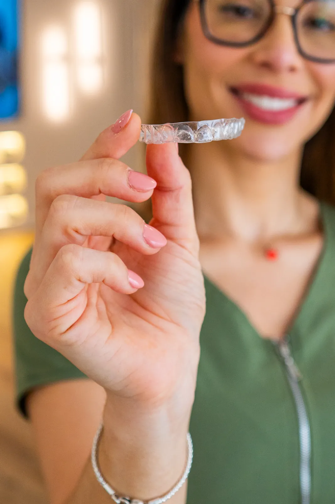
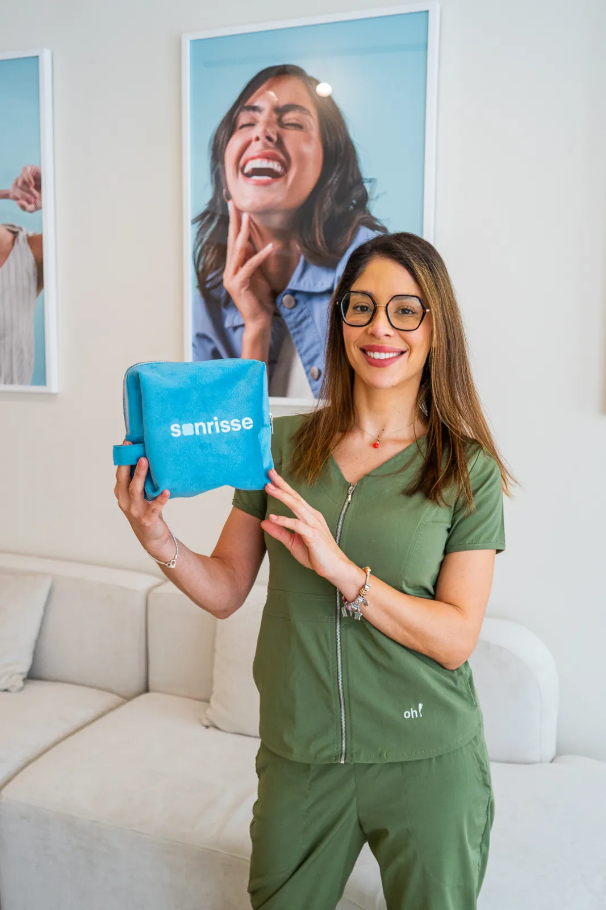
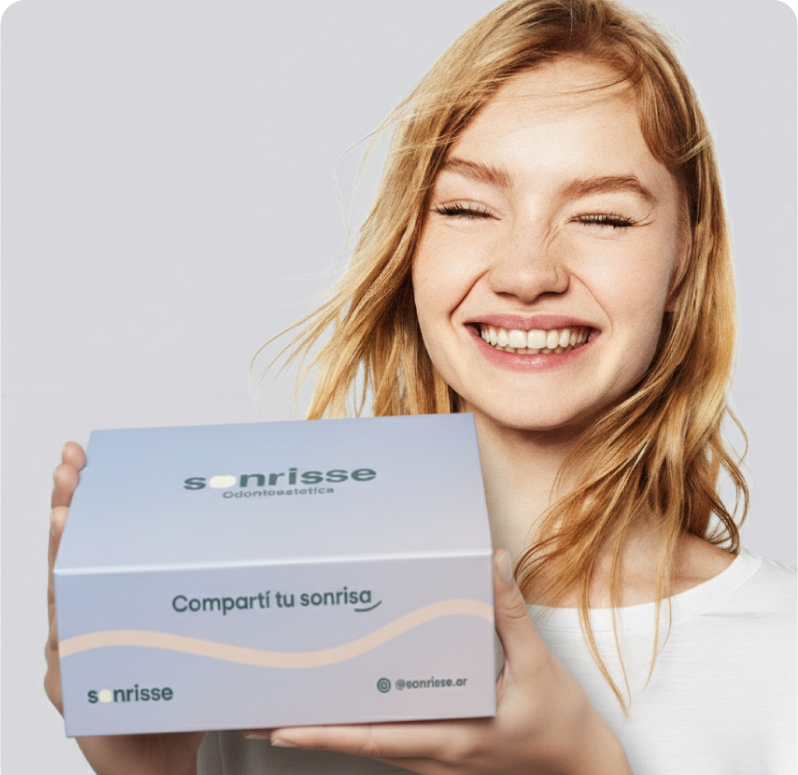
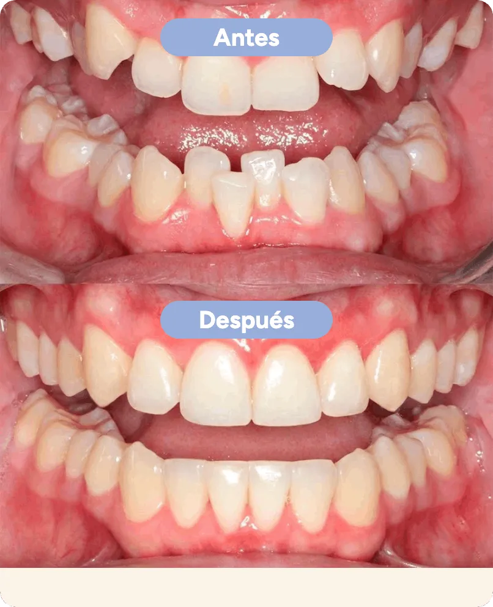

Mirá en una simulación 3D en video cómo va a quedar tu sonrisa antes de empezar. Escaneo digital sin moldes molestos y atención personalizada.

Sin brackets · Sin alambres · 100% Digital
Simulación 3D en video que te muestra exactamente el resultado final y el tiempo de tratamiento.
Citas rápidas y seguimiento personalizado presencial y a distancia durante cada etapa.
Alineadores transparentes termomoldeados, attachments estéticos y contenciones finales.
Más de 1.200 sonrisas reales transformadas en nuestras sedes de Recoleta y Belgrano.
Nuestro recorrido clínico está diseñado para personas con agenda ocupada: citas rápidas sin moldes molestos, previsibilidad en video 3D y controles cada 45 días.
Olvidate de las pastas y moldes que dan arcadas. Realizamos un registro óptico tridimensional milimétrico de tu boca en menos de 5 minutos en Recoleta o Belgrano.

Nuestras ortodoncistas diseñan digitalmente el movimiento de cada diente con nuestro exclusivo Preview Digital Sonrisse®, mostrando cómo quedará tu sonrisa final antes de empezar.

Te entregamos tu kit completo de alineadores transparentes fabricados a medida. Son removibles: podés comer lo que quieras y cepillarte los dientes con total comodidad.

Cambiás tus alineadores cada 2 semanas con controles rápidos en consultorio cada 30 a 45 días. Al finalizar, colocamos contenciones finales para mantener tu nueva sonrisa.

Pacientes reales tratados en nuestras sedes de Recoleta y Belgrano. Deslizá con el dedo o elegí un caso clínico para comparar el antes y el después.

Apiñamiento marcado en maxilar superior e inferior con rotación de incisivos centrales y laterales.
Alineadores invisibles progresivos a medida con expansión de arcada. Sin extracciones ni brackets metálicos.
Seleccioná la opción más cercana a tu caso para recomendarte el plan adecuado.
Nuestras especialistas pueden diseñar tu planificación digital 3D en cualquiera de nuestras sedes de Recoleta o Belgrano.
Consultorios modernos diseñados para tu confort en CABA.
A pasos de Plaza Libertad, Tribunales y Av. Santa Fe. Equipamiento completo de escaneo intraoral 3D.
Sobre Av. Cabildo con excelente conectividad de Metrobús y Subte D. Consultorios de última generación.
Reseñas Verificadas de Google Maps · Recoleta & Belgrano
“Muy contenta con mi resultado. La atención de las doctoras en Recoleta es impecable, super amables y profesionales.”
“Súper recomendable. Me realicé el tratamiento de alineadores invisibles y corrigieron mi mordida en solo 7 meses sin brackets.”
“La verdad más agradecido no puedo estar. El escaneo 3D al inicio te da una seguridad tremenda de cómo vas a terminar.”